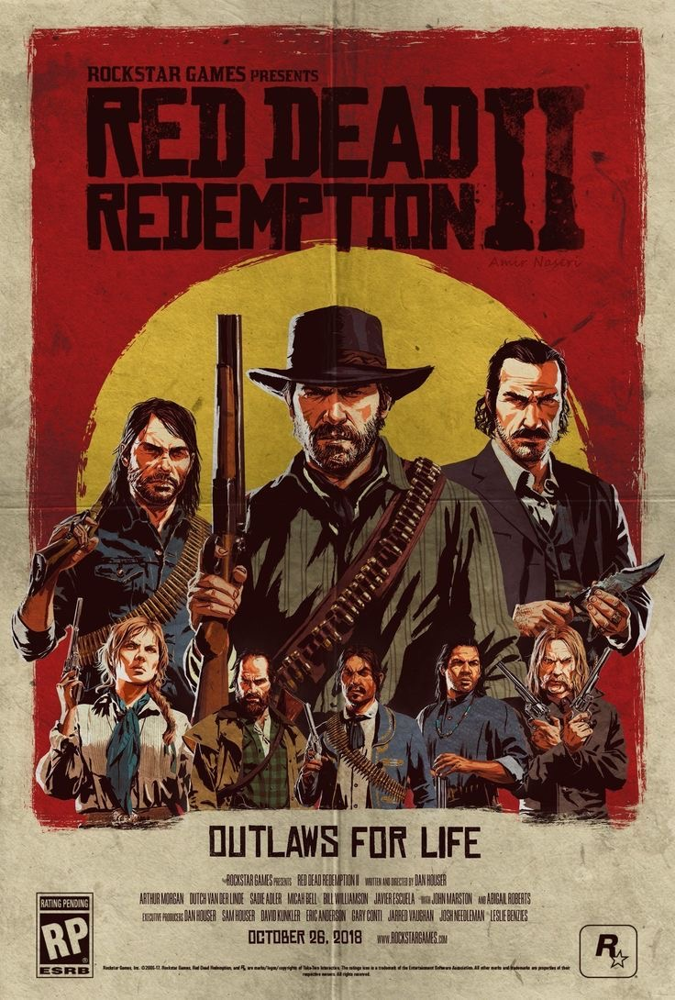

RED DEAD
REDEMPTION 2
Red Dead Redemption 2 é um aclamado jogo de ação e aventura desenvolvido pela Rockstar Games. Lançado em outubro de 2018, o jogo é uma prequela de Red Dead Redemption de 2010 e é ambientado em um mundo aberto que retrata o final do século XIX nos Estados Unidos. A história segue Arthur Morgan, um membro da gangue Van der Linde, enquanto ele navega pelos desafios da vida criminosa em um mundo que está rapidamente se modernizando e deixando o Velho Oeste para trás.
